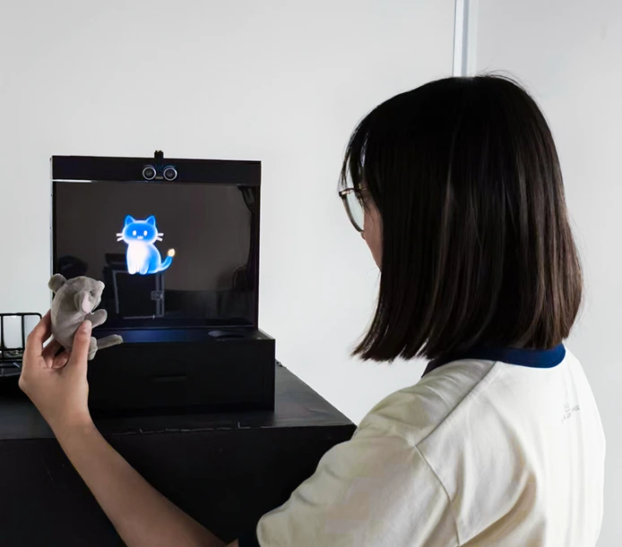
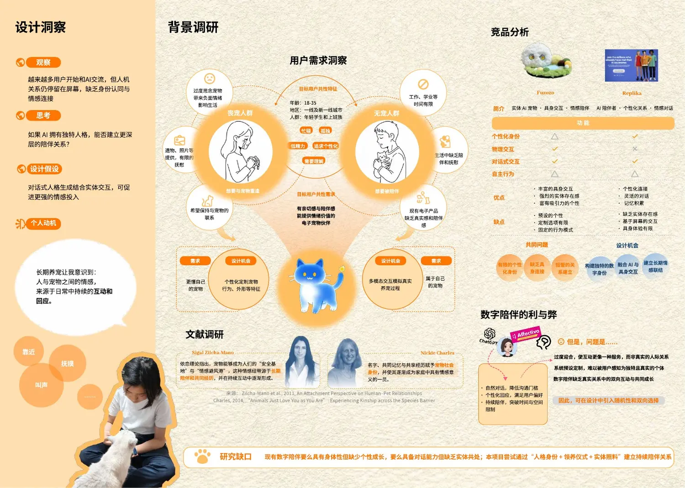
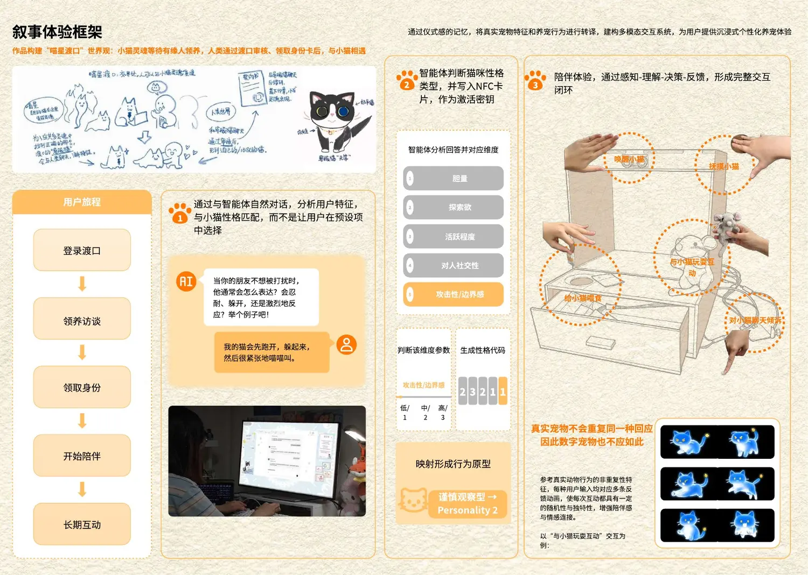
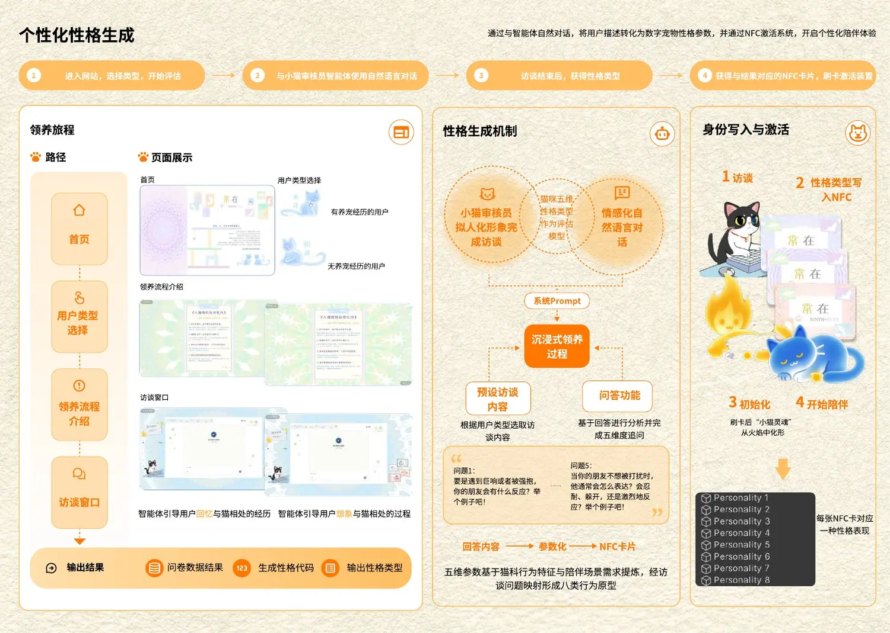
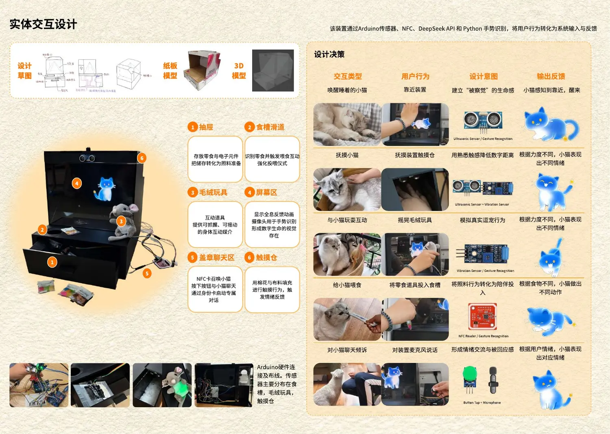
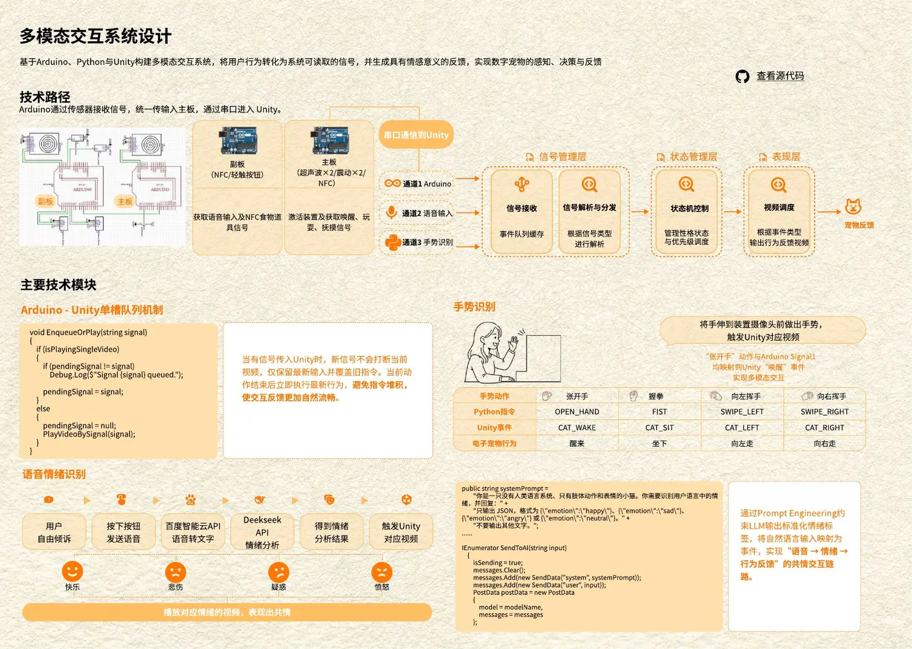
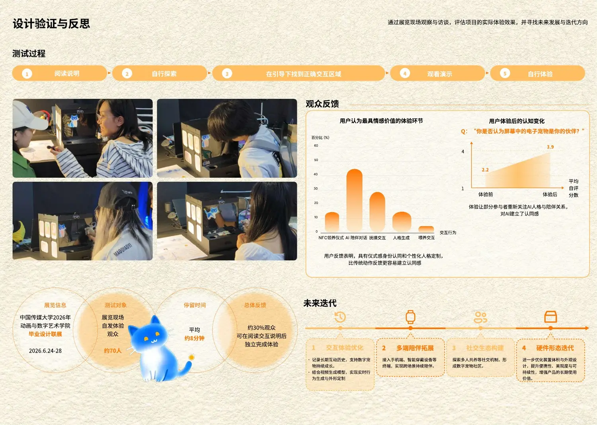

01 · Digital Symbiosis × Emotional Companionship常在
常在
Ninth-Stay
通过“领养仪式”建立独特身份，以多模态感知和实体照料，让数字宠物从屏幕中的服务转变为具有共同经历的陪伴者。

01 · Challenge
数字陪伴拥有语言，却仍缺少“共同生活”的感觉
现有产品通常在“实体存在”与“个性对话”之间二选一：实体宠物有身体却行为固定，对话式 AI 能记忆和回应，却始终被限制在屏幕里。
如果 AI 拥有独特人格，也能被照料、触碰并留下共同记忆，它能否建立更深的陪伴关系？

02 · Strategy
人格身份 + 领养仪式 + 实体照料
系统先通过自然语言访谈理解用户和真实宠物的经历，将回答映射为五维性格参数和八类行为原型，再写入 NFC 身份卡，激活独一无二的数字宠物。
自然语言领养访谈
避免直接勾选预设性格，让用户通过记忆和叙述参与人格生成。
非重复行为反馈
同一输入对应多条反馈动画，以随机性模拟真实生命的不确定回应。
NFC 身份激活
让人格参数成为可携带的身份钥匙，把“生成”转化为正式领养。
长期互动框架
从一次性新奇体验转向可以积累记忆和情感投入的关系。


03 · Embodiment
把靠近、抚摸、玩耍、投喂和倾诉变成系统语言
装置使用超声波、振动、NFC、摄像头、麦克风与触摸结构读取用户行为，由 Arduino 与 Python 处理信号，再驱动 Unity 中数字宠物的状态和动画反馈。


04 · Validation
在真实展览中观察关系如何发生
作品在中国传媒大学 2026 年毕业展数字媒体单元展出，通过现场观察、访谈和问卷记录体验者对个性化身份、实体互动与陪伴感的反应，并据此提出后续迭代方向。

从数字角色
到被照料的个体
70±现场体验观察与访谈
5种多模态照料行为
1stSIGGRAPH Asia 论文第一作者
下一项目 · 共演